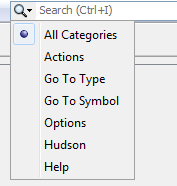
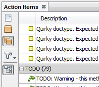
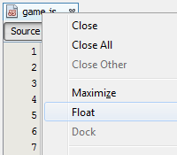

基本IDE
{kind=link}
NetBeans IDEは、幅広いアプリケーション開発テクノロジを対象とするモジュール方式の開発者ツールです。基本IDEは、高度な複数言語エディタ、デバッガとプロファイラ、およびバージョン管理と開発者間のコラボレーションのためのツールを備えています。
{kind=link}
テンプレートとサンプル・アプリケーション
NetBeans IDEは、サポートするすべてのテクノロジ向けに、プロジェクト・テンプレートの形式でスケルトン・アプリケーションを提供します。また、一連のサンプル・アプリケーションを備えており、その一部は、NetBeans.orgから入手可能な関連チュートリアルに従ってステップ・バイ・ステップ形式で再作成できます。
IDEには、Java SEアプリケーション、Java EEアプリケーション、Java MEアプリケーション、HTML5アプリケーション、NetBeansプラットフォーム・アプリケーション、PHPアプリケーションおよびC/C++アプリケーションの作成に役立つ、プロジェクト・テンプレートとサンプル・プロジェクトが付属しています。
{kind=link}
データベースおよびサービス
「サービス」ウィンドウでは、データベース、サーバー、Webサービス、問題トラッカなど、多くの補助リソースにアクセスできます。
IDEでは、データベースおよびサーバーの開始と停止を直接実行できます。データベースを操作する際は、データの追加、削除および変更がIDEで行えます。アプリケーションをサーバーにデプロイすると、デプロイしたリソースが「サーバー」ノードに表示されるので、それらを管理できます。
bugデータベース(Issuezilla、Bugzillaなど)に接続し、IDEのプロジェクトに対する問題点のレポートを一覧表示することができます。

プラグイン・マネージャ
IDEの使用中は、「ツール」メニューからプラグイン・マネージャにいつでもアクセスして、インストールした一連の機能の追加、削除または更新を行うことができます。
Java SE、Java EE、Java ME、HTML5、Groovy、PHPからC/C++開発まで、あらゆるタイプの開発用に様々なプラグインが用意されています。
NetBeansプラグイン・ポータルでコミュニティ提供のプラグインも入手できます。
クイック検索 |
アクション項目 |
カスタマイズ可能なワークスペース |
|
 |
 |
 |
関連項目
- 最新の安定版リリースの主な機能のリストについては、NetBeans IDE 8.1リリース・ページを参照してください。
- 作業を開始する際に役立つチュートリアルについては、「一般的なJava開発の学習」を参照してください。